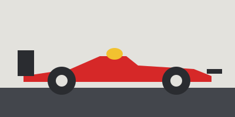

Un po' di storia
La Formula 1 come la conosciamo è nata nel 1950, ma le corse esistevano già da prima. Da allora le macchine sono cambiate tantissimo, e non solo per andare più forte: una parte importante del lavoro è stata rendere tutto più sicuro.


Le tappe che mi sembrano più importanti
- 1950 Primo campionato del mondo di Formula 1. La gara di apertura è a Silverstone e il primo campione è Giuseppe Farina, su Alfa Romeo.
- 1951 La Ferrari vince la sua prima gara di Formula 1, sempre a Silverstone, con José Froilán González.
- fine anni '50 La Cooper dimostra che mettere il motore dietro al pilota funziona meglio. Da lì in poi quasi tutte le monoposto seguono questa idea.
- fine anni '60 Compaiono le ali: l'aria non serve più solo a raffreddare, ma a tenere la macchina schiacciata a terra in curva.
- anni '80 È l'epoca dei motori turbo, con potenze enormi.
- 1994 Il fine settimana di Imola, in cui muoiono Roland Ratzenberger e Ayrton Senna, segna una svolta: la sicurezza diventa una priorità vera.
- 2014 Arrivano i motori V6 turbo ibridi, che usano anche energia recuperata in frenata.
- 2018 Debutta l'Halo, la barra che protegge la testa del pilota. All'inizio molti la trovavano brutta, adesso nessuno la vorrebbe togliere.
Se vuoi vedere dove si corre tutto questo, passa alla pagina sui circuiti.